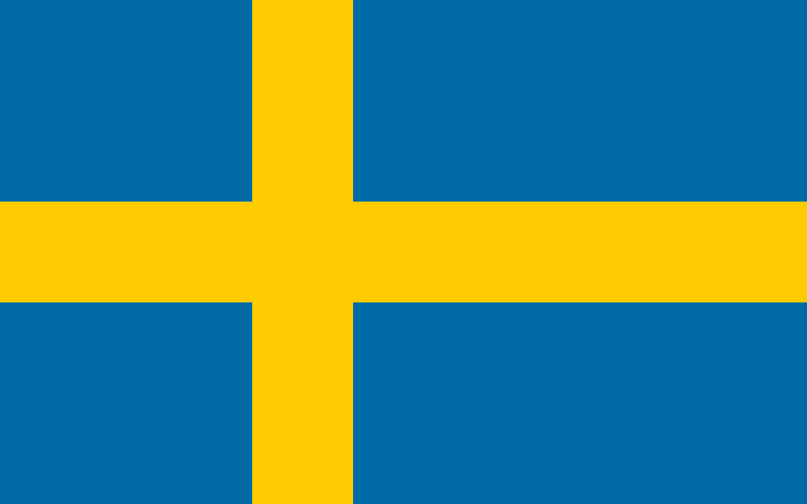

Member states
| State |
Accission |
Area |
Population |
Flag |
| Austria |
1 January 1995 |
8,932,664 |
83,855 km2 |
|
| Belgium |
Founder |
11,566,041 |
30,528 km2 |
|
| Bulgaria |
1 January 2007 |
6,916,548 |
110,994 km2 |
 |
| Croatia |
1 July 2013 |
4,036,355 |
56,594 km2 |
 |
| Cyprus |
1 May 2004 |
896,005 |
9,251 km2 |
|
| Czech Republic |
1 May 2004 |
10,701,777 |
78,866 km2 |
 |
| Denmark |
1 January 1973 |
5,840,045 |
43,075 km2 |
 |
| Estonia |
1 May 2004 |
1,330,068 |
45,227 km2 |
 |
| Finland |
1 January 1995 |
5,533,793 |
338,424 km2 |
 |
| France |
Founder |
67,439,599 |
640,679 km2 |
|
| Germany |
Founder |
83,155,031 |
357,021 km2 |
 |
| Greece |
Founder |
83,155,031 |
357,021 km2 |
 |
| Hungary |
1 May 2004 |
9,730,772 |
93,030 km2 |
 |
| Ireland |
1 January 1973 |
5,006,907 |
70,273 km2 |
 |
| Italy |
Founder |
59,257,566 |
301,338 km2 |
 |
| Lithuania |
1 May 2004 |
2,795,680 |
65,200 km2 |
|
| Latvia |
1 May 2004 |
1,893,223 |
64,589 km2 |
 |
| Luxembourg |
Founder |
634,730 |
2,586 km2 |
 |
| Malta |
1 May 2004 |
516,100 |
316 km2 |
 |
| Netherlands |
Founder |
17,475,415 |
41,543 km2 |
 |
| Poland |
1 May 2004 |
37,840,001 |
312,685 km2 |
 |
| Portugal |
1 January 1986 |
10,298,252 |
92,390 km2 |
|
| Romania |
1 January 2007 |
19,186,201 |
238,391 km2 |
 |
| Slovakia |
1 May 2004 |
5,459,781 |
49,035 km2 |
|
| Slovenia |
1 May 2004 |
2,108,977 |
20,273 km2 |
 |
| Spain |
1 January 1986 |
47,394,223 |
504,030 km2 |
|
| Sweden |
1 January 1995 |
10,379,295 |
449,964 km2 |
 |
 European Union
European Union